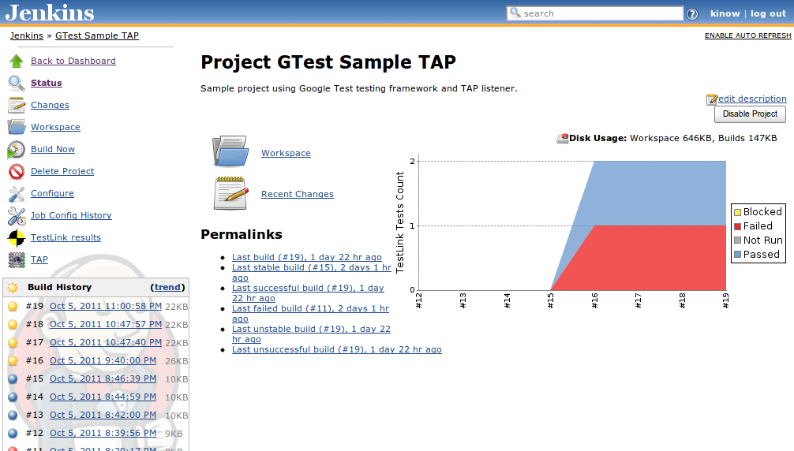

Agenda
Things we'll (try to) cover;
- TDD
- Unit Testing
- E2E Testing
- CI
TDD
Brogramming TDD?
- Keep fixing your code until you can't see any bugs
- Test using alerts and console logs
- Hotswap variables directly to corner bugs
- Refresh the page as much as you can
- If I can't see the bug then it's not there
- Only bother testing with Chrome
- Wait for your boss to yell at you...
- Trace Driven Development
Uncle Bob's TDD!
- Write your tests before or inline with during development
- Test using dump(), debugger and breakpoints
- Skip, focus and mock specific tests to corner certain bugs
- Autotest all your tests each time you update your code
- Existing tests keep track of previously-fixed bugs
- Test as many browsers and devices as you have access to
- Wait for your tests or CI server to yell at you...
- Test Driven Development

TDD again!
Ecosystem in JS..
| Suitest | DOH | karma/Testacular | JSUnit | EnhanceJS | QUnit | RhUnit | Crosscheck | |
| J3Unit | Mocha | intern | JSNUnit | YUI Test | JSSpec | UnitTesting | JSpec | |
| Jasmine | screw-unit | Test.Simple | Test.More | TestCase | TestIt | jsUnitTest | JSTest | |
| JSTest.NET | jsUnity | RhinoUnit | JasUnit | FireUnit | Js-test-driver | Js-test-runner | Sinon.js | |
| SOAtest | Vows | Nodeunit | Tyrtle | wru | Buster.JS | Protractor | LBRTW UT |
TDD again!
Ecosystem in JS..
| Suitest | DOH | karma/Testacular | JSUnit | EnhanceJS | QUnit | RhUnit | Crosscheck | |
| J3Unit | Mocha | intern | JSNUnit | YUI Test | JSSpec | UnitTesting | JSpec | |
| Jasmine | screw-unit | Test.Simple | Test.More | TestCase | TestIt | jsUnitTest | JSTest | |
| JSTest.NET | jsUnity | RhinoUnit | JasUnit | FireUnit | Js-test-driver | Js-test-runner | Sinon.js | |
| SOAtest | Vows | Nodeunit | Tyrtle | wru | Buster.JS | Protractor | LBRTW UT |
Unit Testing
Unit Testing
The core units which make up features should be verified with accompanying unit tests. In JavaScript apps, the smallest units of code you can test are usually individual functions.
Controllers
it('should have a working myController',
inject(function($controller, $rootScope) {
var ctrl = $controller('MyCtrl', {
$scope : $rootScope
//anything in here will act as a mock
});
expect($rootScope.data).toBe('something');
}));
Directives
$compile and $digest
it('should have a working myDirective',
inject(function($compile, $rootScope, $document) {
var body = angular.element($document[0].body);
var element = angular.element('<div my-directive></div>');
body.append(element);
$compile(element)($rootScope);
$rootScope.$digest();
expect(element.children().length).toBe(10);
}));
Services/Factories
Injecting the service...
it('should have a working myFactory',
inject(function(urlPrefixer, $location) {
urlPrefixer('/home');
expect($location.path()).toBe('/public/home');
}));
Services/Factories
Module to mock it!
it('should have a working myDirective',
var interceptedPath;
module(function($provider) {
$provider.provide('$location', {
path : function(p) {
interceptedPath = p;
}
});
});
inject(function(urlCounter) {
urlPrefixer('/home');
expect(interceptedPath).toBe('/admin/home');
})
);
Filters
Like with services...
it('should have a working even filter',
inject(function(evenFilter, $filter) {
expect(evenFilter([1,2,3,4])).toBe([2,4]);
expect($filter('even')([1,2,3,4])).toBe([2,4]);
}));
Routes
$location
it('should have a working /home route', inject(function($location, $rootScope) {
$location.path('/home');
$rootScope.$digest();
expect($location.path()).toBe('/home');
expect($route.current.controller).toBe('HomeCtrl');
}));
Skipping and Filtering Tests
Test Coverage
karma-coverage
- Comes bundled into Karma via karma-coverage
- Gives you a full breakdown of what tests were captured and what tests were not
- Run using "grunt coverage".
E2E Testing
Promises
... or futures, deferreds
Promises are objects which represent the pending result of an asynchronous operation. You can use these to schedule further activity after the asynchronous operation has completed by supplying a callback.
Providing a clear interface to schedule activity with asynchronous tasks, they also compose.
Promises
... or futures, deferreds
aPromise = someAsyncOperation(); aPromise.done(function() { // runs if all went well }); aPromise.fail(function() { // runs if something went wrong }); aPromise.always(function() { // runs either way });
Protractor
just for AngularJS

Protractor
- An AngularJS E2E Testing Framework
- Introduced during AngularJS 1.2 and Beyond presentation
- A new replacement of the existing E2E Testing framework
Protractor
- Built on WebdriverJS and Selenium Server
- New syntax when writing tests
- Allows running tests targeting remote addresses, No longer need to have test files on the server being tested
- Can take advantage of Selenium Grid to run multiple browsers at once; ie Sauce Labs
- Has it’s own runner, no need for Karma
- Can use Jasmine or Mocha to write test suites
Protractor
-
Installed via Node Package Manager
npm install protractor -
Install Selenium Standalone Server
node_modules/protractor/bin/install_selenium_standalone -
Note: The Standalone Server is not needed if you are going to run against an existing Selenium Grid or Installation
- Note: Windows users need to execute second command from node
Protractor
var util = require('util');
describe('Adjunct List', function () {
var ptor;
beforeEach(function () {
ptor = protractor.getInstance();
ptor.get('#/');
});
it('should do something', function () {
ptor = protractor.getInstance();
ptor.findElement(protractor.By.className('brand')).click();
expect(ptor.getCurrentUrl()).toContain('#/');
}, 10000);
});
Protractor
- Use Selenium WebdriverJS Syntax:
ptor.findElement(protractor.By.x(‘...’)); or ptor.findElements(protractor.By.x(‘...’)); - findElement returns a single element, findElements returns an array of elements.
- Both will throw an exception if the locator cannot find the element on the page
Protractor
protractor.By.className('redBtn')
protractor.By.css('.redBtn')
protractor.By.id('loginButton')
protractor.By.linkText('Go Home')
protractor.By.partialLinktext('Home')
protractor.By.name('email')
protractor.By.tagName('h2')
protractor.By.xpath('')
Protractor
protractor.By.binding('{{status}}')
protractor.By.select("user")
protractor.By.selectedOption("red")
protractor.By.input("user")
protractor.By.repeater("cat in pets")
protractor.By.repeater("cat in pets").row(1).column("{{cat.name}}"))
WebElement
Methods
clear() //If this element is a text entry element, this will clear the value. click() //Click this element. getAttribute(name) //Get the value of a the given attribute of the element. getCssValue(propertyName) //Get the value of a given CSS property. getLocation() //Where on the page is the top left-hand corner of the rendered element? getSize() //What is the width and height of the rendered element? getTagName() //Get the tag name of this element.
WebElement
Methods
getText() // Get the visible (i.e. not hidden by CSS) innerText of this element, //including sub-elements, without any leading or trailing whitespace. isDisplayed() // Is this element displayed or not? This method avoids the problem //of having to parse an element's "style" attribute. isEnabled() // Is the element currently enabled or not? This will generally return //true for everything but disabled input elements. isSelected() // Determine whether or not this element is selected or not. sendKeys(keysToSend) //Use this method to simulate typing into an element, //which may set its value.
CI
Travis-CI
- Sidebar
- Build in progress [yellow]
- Build failed [red]
- Build passed [green]
- Project name and links
- Types of build
- Build activity
Jenkins-CI

SauceLabs
Selenium testing
<Thank You!>